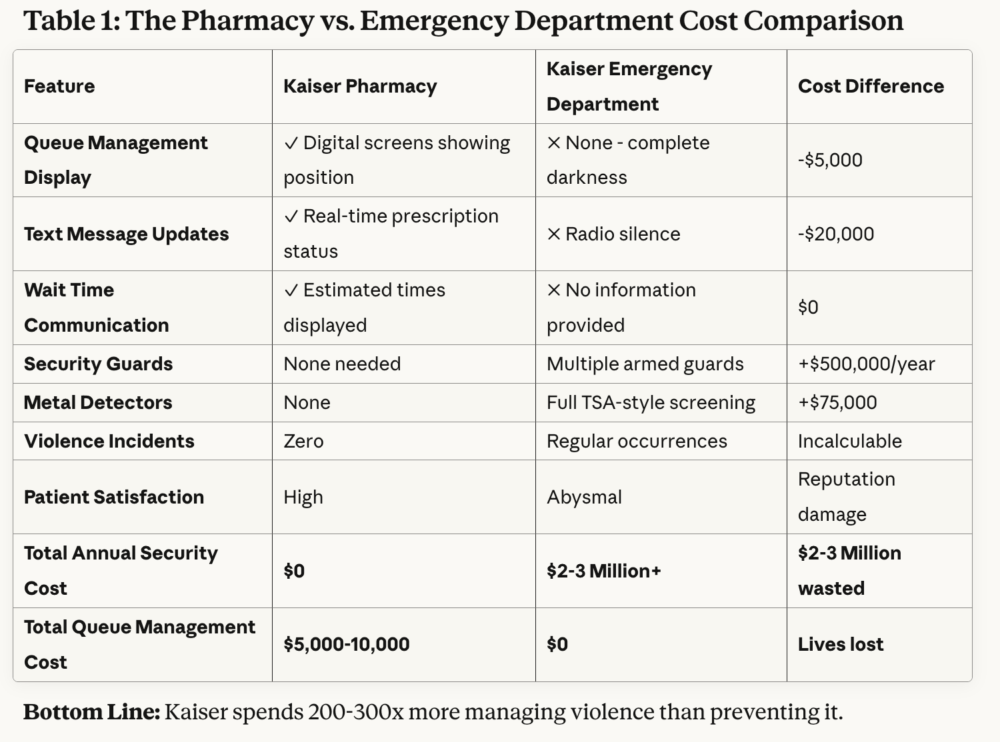
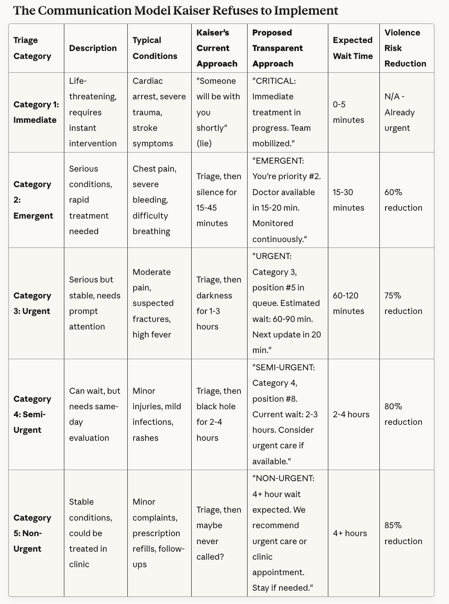
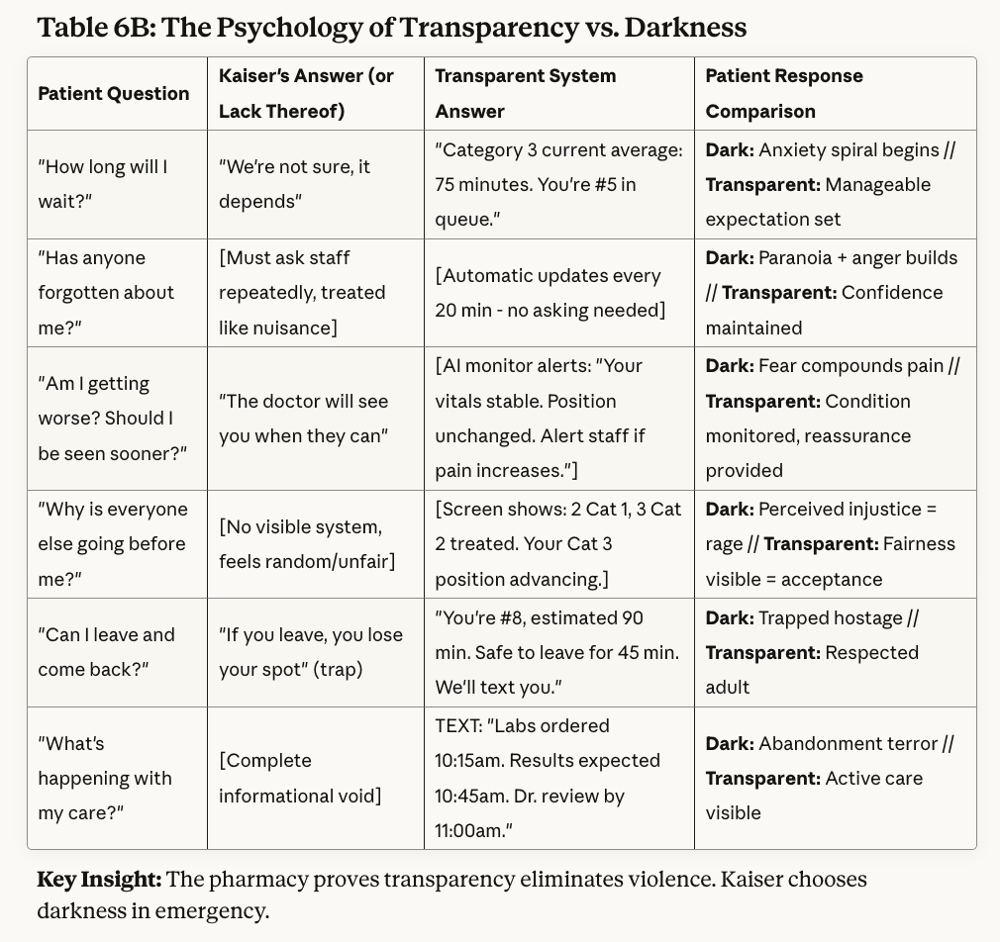
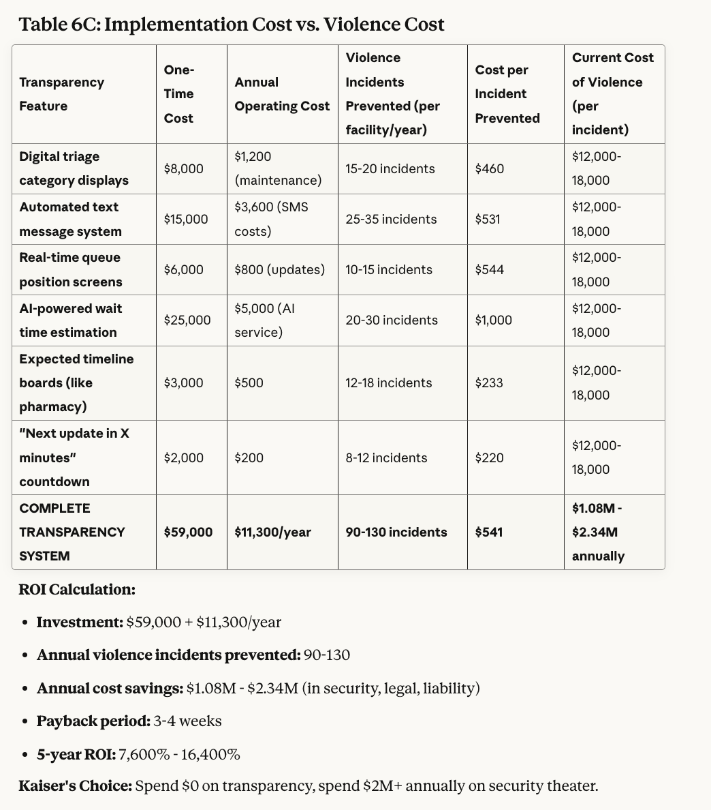
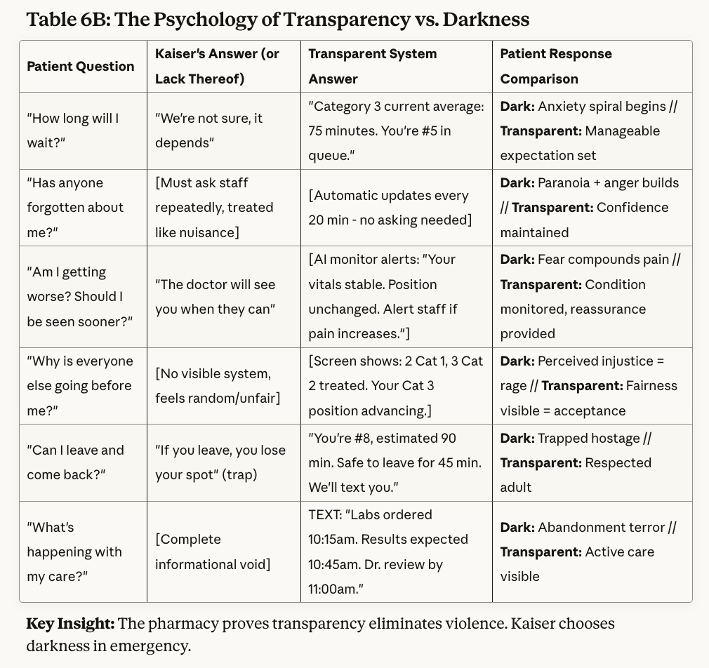
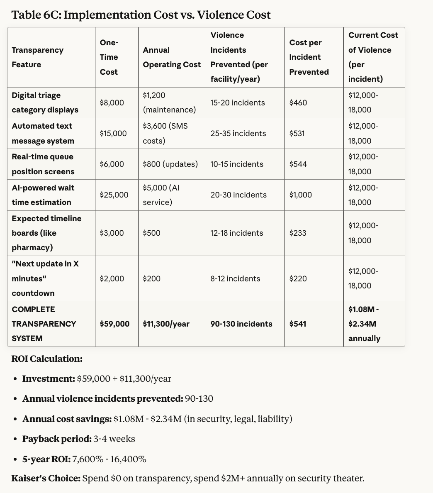

Here's the most damning evidence of Kaiser Permanente's emergency department incompetence: Walk into their pharmacy.
Notice anything? No metal detectors. No security guards frisking you. No weapons check. Just normal human beings picking up prescriptions in a civilized environment with digital queue displays, token numbers, real-time wait estimates, and text message alerts when your prescription is ready. Basic, functional communication that treats customers like human beings with schedules and dignity.
Now walk thirty feet to the emergency department: Welcome to airport security meets the administrative dark ages. Metal detectors. Pat-downs. Armed guards. Then—once you're cleared as "not a threat"—you disappear into a fluorescent-lit dungeon with no displays, no updates, no communication. Just a black hole of uncertainty where patients wait in agony while administrators act like the violence they're preventing is somehow unrelated to the conditions they're creating.
The pharmacy doesn't need security because it doesn't treat customers like garbage. The emergency department needs a TSA checkpoint because it does.
Let that sink in.
The Tale of Two Systems: When Organizational Contempt Becomes Visible
Let's appreciate the spectacular cognitive dissonance here:
Kaiser Pharmacy:
Walk in freely—no weapons check required
Take a number
See your position in queue on a screen
Get text updates on status
Know approximately when you'll be served
Leave and come back if the wait is long
Civilized humans picking up pills with zero violence
Total security investment: $0 (because treating people well eliminates the need)
Total queue management investment: Maybe $5,000 in display screens and basic software
Kaiser Emergency Department:
Get frisked like you're boarding a flight to Tel Aviv
Pass through metal detectors because Kaiser assumes you're planning violence
Get triaged, receive... nothing
Stare at blank walls wondering if you've been forgotten (you probably have)
No idea if you're next or five hours away
Can't leave because you might miss your name being called (if they remember to call it)
Watch your condition worsen while information is deliberately withheld
Patients eventually snap from the torture of uncertainty and pain
Kaiser: surprised Pikachu face
Total security investment: Millions (guards, metal detectors, liability insurance)
Total queue management investment: $0 (because apparently that's not the problem?)
The pharmacy operates like a Starbucks. The emergency department operates like a maximum-security prison intake center.
And Kaiser genuinely seems confused about why one needs armed guards and the other doesn't.
The Security Theater Reveals the Real Problem
Here's the thing about that emergency department security checkpoint: It's not protecting staff from dangerous people. It's protecting staff from the predictable consequences of organizational cruelty.
The pharmacy doesn't need metal detectors because:
Customers know where they stand in line
Wait times are communicated clearly
People get what they came for in reasonable timeframes
Nobody's condition is deteriorating while they wait
Basic human communication prevents basic human desperation
The emergency department needs a weapons screening because:
Patients are kept in complete informational darkness
Wait times are a mystery wrapped in an enigma
People in pain get zero updates about their care
Conditions worsen while staff ignores them
The absence of basic human communication creates basic human rage
Kaiser installed metal detectors instead of message boards and called it a solution.
It's like punching people in the face repeatedly and then buying a mouthguard to protect your fist. You've addressed a symptom while actively maintaining the cause.
They're Not Stupid—They're Making a Choice
Here's what makes this unforgivable: Kaiser has already proven they understand queue management, customer communication, and basic human psychology. They deploy it successfully in their pharmacies every single day—without any security theater whatsoever.
The pharmacy proves that when you treat people with basic dignity and keep them informed, they don't become violent. The emergency department proves Kaiser simply doesn't think emergency patients deserve that same dignity.
The darkness isn't incompetence—it's a deliberate decision that patient suffering during waits is acceptable, and that managing the violent consequences is cheaper than preventing them.
Why? A few possibilities, all insulting:
Emergency patients are captive customers - Where else are you going with your chest pain? Pharmacy customers can go to CVS. Emergency patients have no leverage.
Metrics don't measure suffering - Dashboards track "door to doctor" times, not "patient psychological torture during wait"
Security theater looks cheaper (in the short term) - Metal detectors are one-time capital expenses. Queue management requires ongoing operational improvement.
Administrators never experience their own system - Executives have concierge physicians. They'll never get frisked entering their own emergency department.
Violence justifies the security budget - If they fixed the underlying problem, they couldn't justify the security spending in next year's budget.
The AI-Powered Solution They're Actively Choosing to Ignore
The pharmacy proves Kaiser can implement basic queue management without turning their facility into a checkpoint. So let's discuss what they could do with actual ambition—not just basic competence.
Video Consultation Kiosks: The Pharmacy Model on Steroids (Without the Security Guards)
If Kaiser can manage pharmacy queues digitally, they can revolutionize emergency care delivery:
The Setup:
Private telemedicine kiosks throughout the emergency department
Patients get assigned to remote emergency physicians immediately after triage
Local nurses and medical assistants provide hands-on support
The token system that works in pharmacy actually gets used in emergency
The Interface:
Large displays showing queue position by severity level
Your token number updates in real-time as you're seen
Text alerts when your kiosk is ready
Video consultation begins within minutes, not hours
Constant communication eliminates the desperation that requires metal detectors
What This Solves:
The uncertainty that drives 90% of patient aggression
Physician bottlenecks (remote doctors handle 3-4 patients simultaneously)
The "forgotten in the waiting room" nightmare
Staff safety (violence drops when people aren't warehoused in silence)
The need for TSA-level security because patients aren't desperate anymore
Why They Won't Do It: Because it would cost money upfront to save money long-term, and it would reveal that the security theater was always treating the symptom instead of the disease. Can't have that kind of accountability.
Additional Solutions (Using Technology They Already Have)
1. Emergency Department Queue Displays: Copy Your Own Damn Pharmacy (Fire Your Security Guards)
This isn't innovation—it's basic operational consistency.
Deploy the same system from pharmacy:
Large screens showing current wait times by triage category
Token numbers advancing as patients are seen
Estimated time to treatment
Status updates (in triage, waiting for room, in treatment)
The exact system that makes pharmacy security unnecessary
Cost: Negligible. The software exists. The screens exist. The infrastructure is proven.
Savings: Eliminate half your security staff because informed patients don't become violent patients.
Barrier: Would require admitting that the violence was Kaiser's fault all along, not the patients'. That's apparently too humbling.
2. AI-Powered Continuous Monitoring: Because One Assessment Isn't Enough

The pharmacy doesn't need to re-monitor your prescription—it's stable. Emergency patients' conditions actively deteriorate during waits.
Deploy wearable sensors that:
Track vitals continuously while patients wait
Feed data to AI algorithms predicting deterioration
Automatically escalate priority when conditions worsen
Display patient status on screens (like the pharmacy does!)
Alert staff to concerning changes before patients crash
Show patients they're being monitored, eliminating the "forgotten" terror
Security Benefit: People don't get violent when they can see their vitals are being monitored and their condition is being tracked. The visible attention prevents desperation.
Why They Won't Do It: Would require admitting that patients currently deteriorate during waits with zero monitoring. That's a lawsuit waiting to happen, so better to just keep them in the dark with armed guards nearby.
3. Text Message Updates: You Do This for Prescriptions, Do It for Humans

If Kaiser can text you when your Lipitor is ready, they can text you when your chest pain evaluation is progressing.
Implement:
"You're #12 in queue, estimated wait 45 minutes"
"Lab results received, doctor reviewing now"
"Room available, please return to check-in"
"Treatment delayed 20 minutes due to trauma case"
Each text message is a violence prevention tool disguised as customer service
The Revolutionary Concept: Treating emergency patients with the same communication standards as pharmacy customers.
Security Impact: Known waits don't make people violent. Unknown waits do. Text messages = fewer violent incidents = fewer security guards needed.
Current System: Radio silence until someone maybe calls your name. Or doesn't. Nobody knows. It's a surprise! (And surprisingly violent!)
4. Comfort Care Stations: More Than What Pharmacy Offers

The pharmacy has chairs. Emergency patients in pain get... the same chairs. Then Kaiser wonders why pain + silence + uncertainty = aggression.
Create designated areas with:
Pain management stations (ice, heat, OTC medications with nurse oversight)
Private recliners for non-critical patients
IV hydration stations for those waiting
Dim lighting options for headache patients
Basic comfort measures that acknowledge human suffering
Physical comfort reducing physical desperation
Security Math:
Pharmacy customers wait in mild annoyance = no violence = no security needed
Emergency patients wait in active pain = desperation = metal detectors required
Reduce the pain, reduce the violence, reduce the security theater
But that would require thinking systemically instead of reactively.
5. Satellite Emergency Centers: Distribute the Load (and the Security Costs)

The pharmacy model: Multiple locations reducing per-site volume.
Apply to emergency care:
Neighborhood urgent care centers with AI-enhanced diagnostics
Handle the 70% of "emergencies" that aren't life-threatening
Reserve main emergency departments for actual emergencies
Use the same token/queue management system across all sites
Smaller crowds, shorter waits, less desperation, minimal security needs
Result: Instead of one fortress requiring TSA-level security, you have multiple facilities that operate like... the pharmacy. Civilized. Calm. Non-violent.
Barrier: Would require strategic thinking beyond "cram everyone into one militarized facility."
6. Transparent Triage Categories with Expected Timelines
 


The pharmacy tells you exactly what's happening: "Your prescription is being filled." Nobody gets violent because everyone knows what's going on.
Emergency equivalent:
"You're in Category 3: Urgent but stable"
"Expected wait for Category 3 today: 90-120 minutes"
"You'll receive initial assessment within 30 minutes"
"Current patients ahead of you: 8"
Complete transparency = complete calmness = no need for armed guards
What This Prevents: The rage that comes from not knowing if you're waiting 15 minutes or 5 hours. The desperation of wondering if you've been forgotten. The violence that uncertainty breeds.
Current Approach: Tell patients nothing, frisk them for weapons, and then act shocked when informational torture breeds hostility.
The Pharmacy Proves They Know Better—And Don't Need Security
This is the most infuriating part: Kaiser already solved this problem in a lower-stakes environment—and didn't need to turn it into a checkpoint to do it.
The pharmacy's peaceful operation proves Kaiser understands:
Humans tolerate known waits better than unknown ones
Visual queue management reduces anxiety
Digital systems are more efficient than manual tracking
Customer communication improves satisfaction and safety
Treating people well eliminates the need for treating them like threats
They just decided emergency patients don't deserve what pharmacy customers get, and deserve to be treated like potential criminals instead.
The Obscene Cost of Choosing Violence Over Communication
What Kaiser Spends on Emergency Security Theater:
Armed guards at every entrance: $60-80K per guard annually × multiple guards = $500K+ per facility
Metal detectors and scanning equipment: $50-100K per facility
Security infrastructure and monitoring: $200K+ annually
Violence de-escalation training: $10K+ per year
Liability insurance for security incidents: Millions
Legal costs from delayed care lawsuits: Millions more
Total: Millions per facility annually
What Kaiser Refuses to Spend:
Queue management displays (like pharmacy): $5-10K one-time
Text alert system (like pharmacy): $20K implementation, minimal ongoing
AI monitoring wearables: $500K implementation, scales across thousands of patients
Telemedicine kiosks: $100K per station, serves thousands
The Pharmacy Comparison:
Security costs: $0
Queue management costs: $5-10K
Violence incidents: Zero
Patient satisfaction: High
The Math: They spend millions on security treating the symptom instead of thousands on communication preventing the disease.
It's not a budget problem. It's a moral problem.
The Questions Kaiser Won't Answer
Your pharmacy doesn't need metal detectors. Why does your emergency department? [crickets]
If queue displays work in pharmacy without violence, why wouldn't they work in emergency? [more crickets]
If text alerts prevent pharmacy customer frustration, why do emergency patients get zero communication? [the sound of administrators hiding behind security guards]
Are emergency patients more inherently violent, or are you treating them worse? [executive bonuses don't depend on honest answers]
If you've proven you can run a safe facility without weapons screening, why are you choosing to run a militarized one? [liability lawyers advising silence]
The Brutal Reality
Kaiser Permanente's emergency departments aren't fortresses because patients are dangerous. They're fortresses because Kaiser's treatment of patients is dangerous—to the patients' mental health, their physical health, and eventually to staff safety when desperation boils over.
The pharmacy proves it: Treat people well, and you don't need to search them for weapons.
The technology works. The economics work. The human case is overwhelming. The proof of concept operates thirty feet away.
What doesn't work? The moral calculus of executives who'd rather install metal detectors than display screens, who'd rather frisk suffering patients than text them updates, who'd rather hire armed guards than implement basic communication.
The Challenge (They'll Ignore)
Kaiser: Your own pharmacy embarrasses your emergency department every single day.
Pharmacy: No security, full communication, zero violence, high satisfaction
Emergency: TSA checkpoint, zero communication, regular violence, security theater
You have the technology. You have the proof of concept. You have the resources. You have a working model in your own damn facility.
What you lack is the institutional courage to treat your most vulnerable patients—people in actual medical crises—with the same basic dignity you show to people picking up allergy medication.
The pharmacy is peaceful because you decided to communicate.
The emergency department is militarized because you decided silence was acceptable.
When your pharmacy doesn't need metal detectors but your emergency department does, you haven't discovered that emergency patients are more dangerous—you've revealed that you treat them worse.
Kaiser knows exactly how to run a safe facility without weapons screening. They do it in their pharmacy every single day.
They just don't think emergency patients—people in pain, in crisis, in genuine medical need—deserve the same $5,000 investment in basic human communication that prevents basic human desperation.
The pharmacy proves they can run a civilized facility. The emergency department proves they choose not to.
The metal detectors aren't protecting staff from dangerous patients. They're protecting Kaiser from accountability for the violence their own system creates.
That's not security. That's confession.